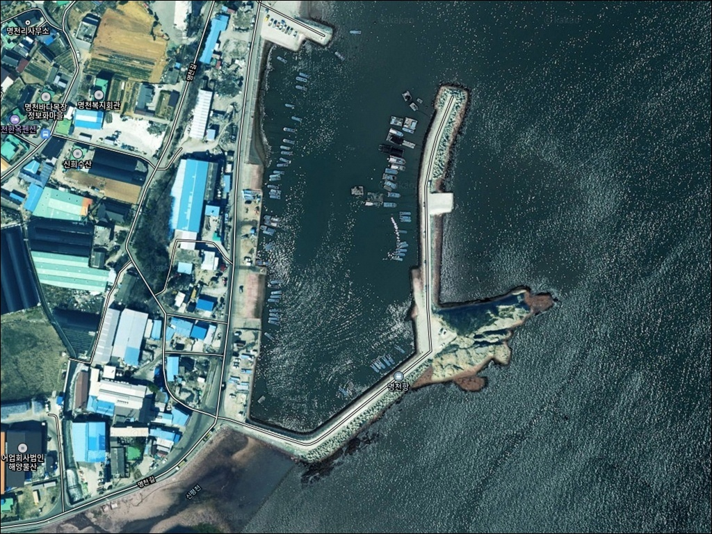
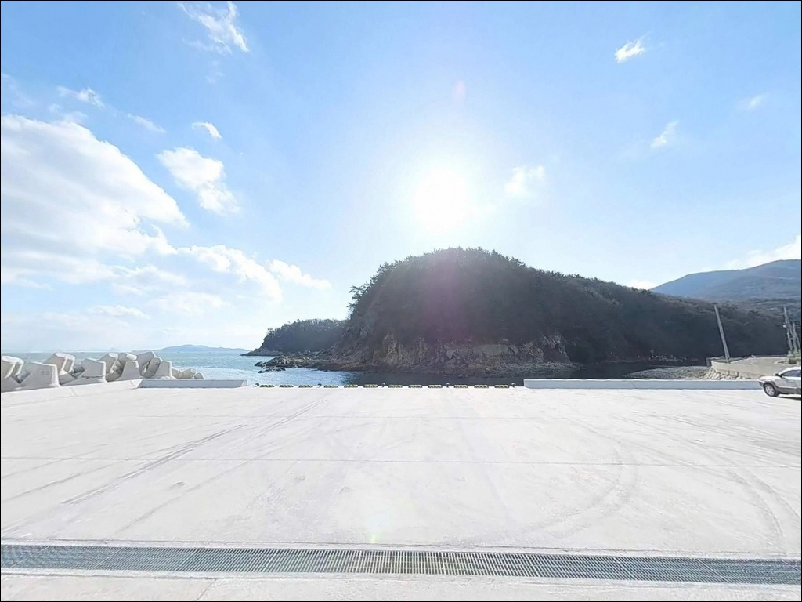
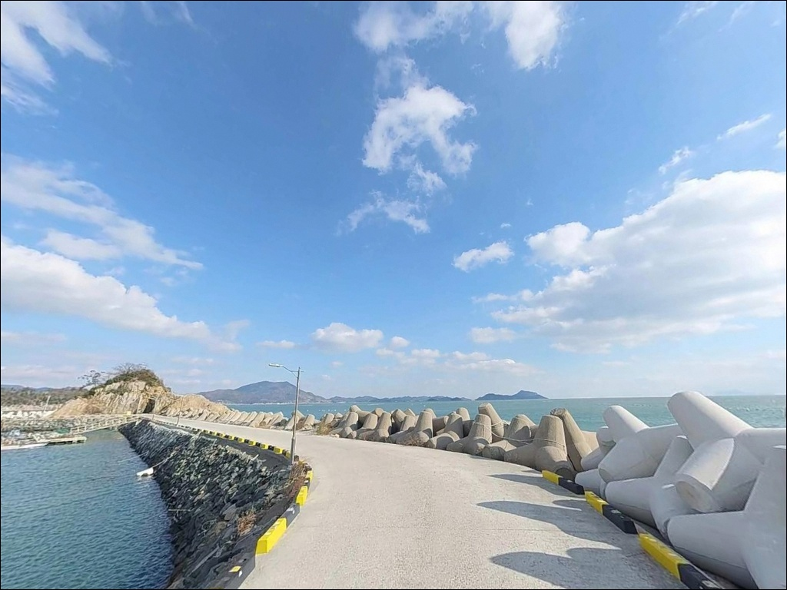
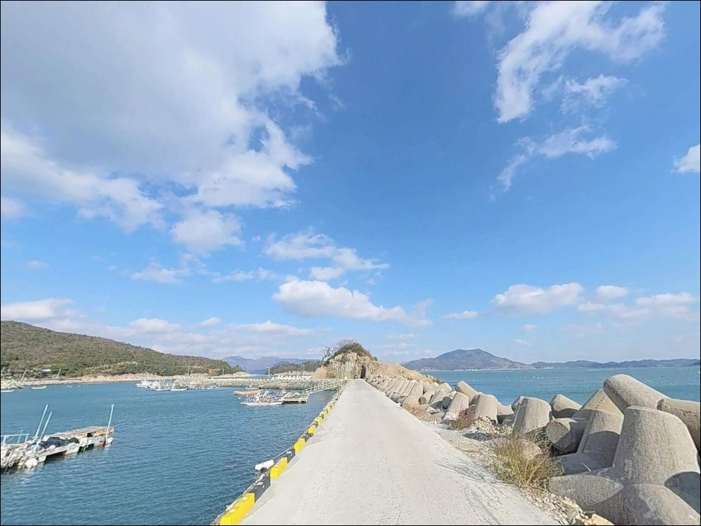
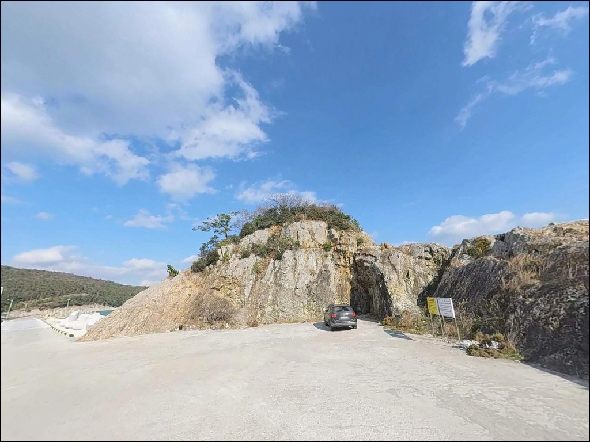
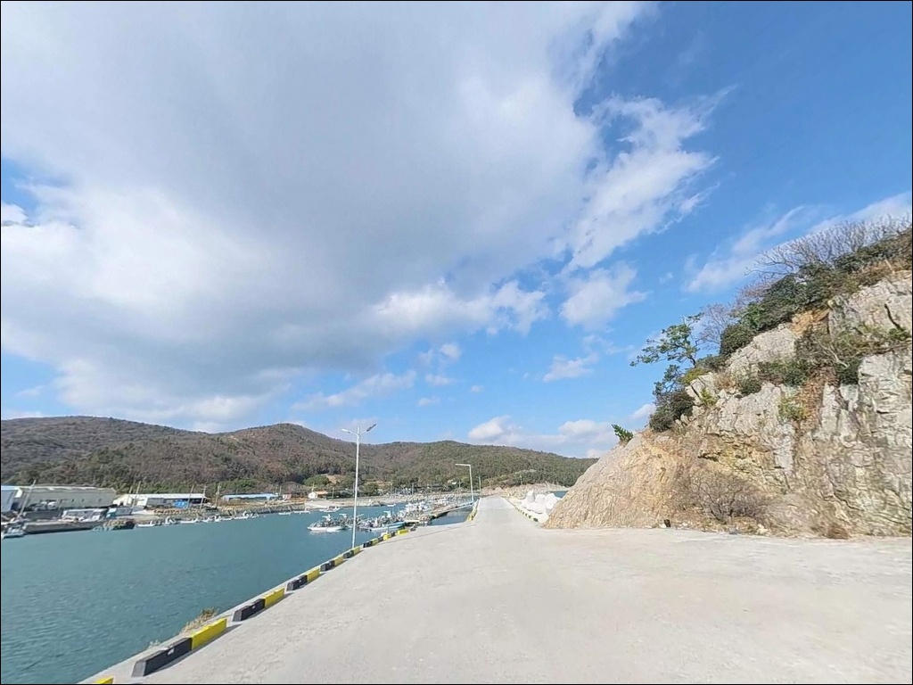
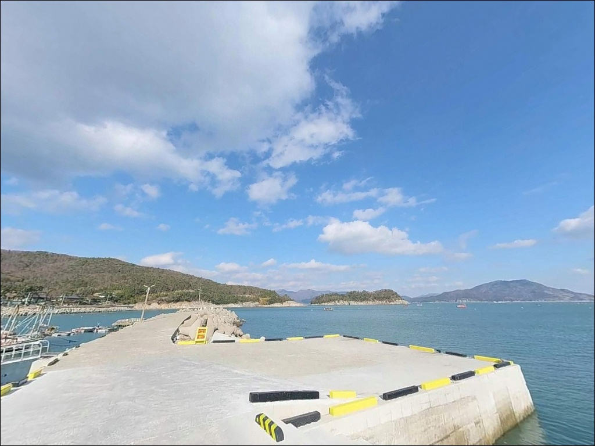
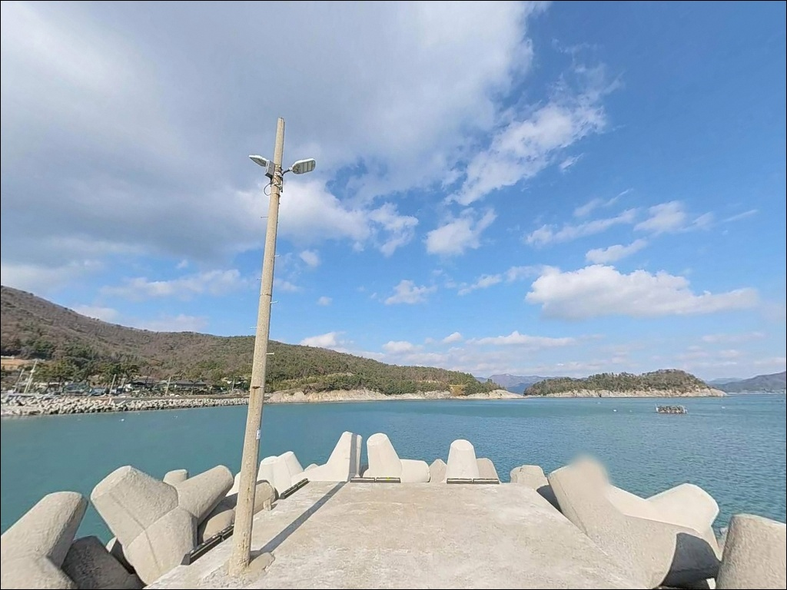
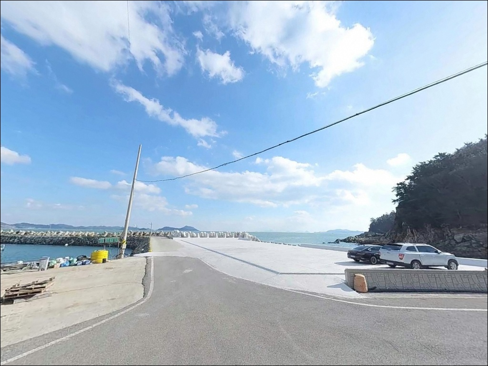

거금도 명천항 릴찌낚시, 창·낙조 조류 타이밍에 살린 방파제 끝단 입질
이 페이지에는 광고(제휴 링크 포함)가 있으며, 광고 링크를 통해 구매하면 운영자가 판매 수익 또는 수수료를 받을 수 있습니다. 포인트 사진: 카카오맵 스카이뷰·로드뷰. 이 페이지의 지도·사진 이미지는 카카오맵의 실제 서비스 이미지와 다를 수 있습니다.


포인트 안내
명천항
전남 고흥군 금산면 신평리 44-18
거금수도 조류가 살아나는 타이밍을 모르고 방파제에 섰다가는
채비를 아무리 달리 써도
릴찌가 제대로 흘러가지 않는 상황이 됩니다.
명천항은 거금도와 소록도 사이 수로 조류의 영향을
방파제 끝단에서 정면으로 받는 구조여서,
창·낙조 타이밍 판단이 조과의 분기점이 되는 포인트입니다.
거금도 북동쪽 해안,
신평리에 자리한 명천항은
1978년 지방어항으로 지정된 곳입니다.
방파제 379m, 물양장 198m의 규모로
거금도 내 소규모 어항 가운데서는
방파제 길이가 긴 편에 속하는 거점 포인트입니다.
이 글은 명천항의
진입 동선, 차박 여건, 물때 판단 기준,
낚시 스타일별 공략 조건에 집중합니다.
조황 단정이나 특정 어종 보장은
이 글의 범위에 포함되지 않습니다.

1. 진입 동선과 포인트 접근성
거금도는 소록대교(2009년)와 거금대교(2011년)가 차례로 개통되면서
육로로 직접 진입할 수 있습니다.
고흥읍 방면에서 국도 27호선을 타고 소록대교와 거금대교를 건넌 뒤,
거금일주로를 따라 북동쪽 신평리 방향으로 이동하면
명천항 입구까지 포장도로가 끊김 없이 이어집니다.
거금대교를 건넌 뒤 명천항까지는
일주도로 기준 10~15분 수준입니다.
항 진입로는 어촌 소로 구간이 포함되어 있어
승용차와 중형 SUV 기준으로 무리가 없는 폭입니다.
물양장 구역 내에 회차 공간이 형성되어 있어
돌아 나오는 데 어려움은 없습니다.
대형 캠핑카나 장축 차량은 최종 진입로 구간에서
폭 여유를 미리 확인하고 들어가는 편이 좋습니다.
주차 후보지는 세 곳입니다.
방파제 시작 지점의 콘크리트 공터,
물양장 변 공터(어선 계류가 없는 시간대),
명천바다목장마을 인근 공용 부지가
순서대로 확인할 구역입니다.
어선 작업 동선을 막지 않는 자리를 먼저 가려내는 것이
기본 매너입니다.

2. 차박 환경과 야간 체류 여건
물양장 변 공터는 평탄하고 바다를 직접 향하는 구조입니다.
신평리 마을이 항 뒤편에 자리해
완전한 고립감보다는 어촌 마을 안 포구에 머무는 분위기입니다.
심야에는 차량 통행이 거의 없고
주변이 조용한 편이라,
낚시 후 하룻밤 쉬어가는 용도로는 나쁘지 않습니다.
야간 조명은 항내 가로등이 물양장 쪽을 중심으로 비추는 수준입니다.
방파제 끝단과 외항 쪽은
조명이 미치지 않는 구간이 있어
헤드랜턴은 반드시 챙겨야 합니다.
외항은 동쪽으로 열린 구조라
동풍 기상 시 파도와 바람의 영향을 직접 받으므로,
기상 확인은 당일 아침에 다시 하는 편이 좋습니다.
마을과 인접한 어항인 만큼
야간 소음을 최소화하고
어민 생활 동선을 배려하는 매너가 기본입니다.
프라이버시 차폐는 제한적이어서
단독 야영보다는 낚시 후 간단히 체류하는 방식이
이 포인트의 차박 활용에 더 어울립니다.


3. 주변 편의시설 및 인프라 현황
명천항 인근에는 명천바다목장마을이 운영 중입니다.
어촌체험마을로 등록된 곳으로,
항 주변 가로등 시설이 이 마을 운영과 연계되어 있습니다.
식사나 간단한 보급이 필요할 때는
마을 내 시설을 먼저 확인하는 편이 현실적입니다.
낚시용품이 필요하다면 거금도 내
거금도낚시(전화 061-843-9001)를 이용할 수 있습니다.
편의점은 거금도 면소재지 방향으로 이동해야 합니다.
GS25 고흥금산점이 명천항에서
일주도로를 경유해 약 7~9km 거리에 있습니다.
식당과 상점은 금산면 소재지 방향으로 선택지가 생기는 구조여서,
식수와 부식은 출발 전에 갖춰 오는 것이
현실적인 준비 방식입니다.
응급 상황이 발생하면 거금대교를 역방향으로 건너
고흥 도양읍 녹동항 일대로 이동해야 합니다.
주유소, 마트, 병원, 약국이 모여 있는 녹동항까지는
명천항에서 약 20~25km 거리입니다.
장기 체류 출조라면 연료와 비상약품을
미리 채우고 들어오는 편이 좋습니다.

4. 물때가 갈라놓는 조과 — 방문 전 준비사항
명천항 방문 전에 가장 먼저 확인할 것은 물때입니다.
거금수도는 창·낙조 조류가 모두 뚜렷하게 흐르는 해역으로,
한조금·한사리 전후에는 조류가 강해지며
이 타이밍이 릴찌낚시 최적 구간이 됩니다.
바다타임에서 신평리 기준 물때를 확인하고
창조 또는 낙조가 살아나는 시간대에
맞춰 자리를 잡는 것이 기본 전략입니다.
방파제 외항은 동쪽으로 노출되어 있어
기상 악화 시 파고가 직접 내습합니다.
기상청 해상 파고 예보는 출발 전날 저녁과
당일 아침, 두 차례 확인하는 것이
헛걸음을 막는 조건입니다.
외항 테트라포트 위에서 이동할 때는
구명조끼와 낚시화는 필수입니다.
방파제 끝단과 테트라포트 주변은
밑걸림이 있는 구간입니다.
여분 채비를 넉넉히 챙겨 두면
현장에서 여유가 생깁니다.
어선 계류 물양장 구역은 조업 동선을 방해하지 않도록
낚시 자리와 주차 위치를 먼저 확인하는 것이 매너입니다.

5. 방파제 끝단과 곶부리 — 지형 기반 낚시 여건 분석
명천항 낚시의 핵심 구간은 방파제 끝단입니다.
끝단은 거금수도에서 흘러드는 조류를 정면으로 수용하는 위치에 있어,
창·낙조 타이밍에 조류 방향으로 채비를 흘리는
릴찌낚시가 가장 잘 어울리는 구조입니다.
수심은 방파제 끝단 기준 5~7m 구간이 형성되며,
내항 쪽으로 올수록 3~4m 권으로 얕아집니다.
항 어항구역 서측에는 암반 돌출 지형이 있습니다.
이 암반 곶부리 구간은 직벽 형태가 일부 포함되어 있어
루어 공략 지점으로 쓸 수 있습니다.
수중여가 분포한 구간이기도 해서
에깅 채비를 내리면
갑오징어 포인트로서의 조건을 갖춥니다.
내항 측 물양장 연안은 발판이 넓고 평탄합니다.
수심 3~4m 권의 뻘 바닥 구조라
바닥낚시가 안정적으로 가능한 자리입니다.
가족 단위로 원투낚시를 펼치거나
초입 생활낚시를 즐기기에 무리 없는 여건입니다.
방파제 끝단과 내항 연안은
낚시 방식에 따라 자리를 분리해 쓸 수 있는 구조입니다.
방파제 끝단은 거금수도 조류가 모이는 구간으로,
창·낙조 타이밍에 릴찌 조과가 살아나는 자리입니다.
출조 전에 최신 조황은 꼭 검색해 보시기 바랍니다.


6. 릴찌부터 원투까지 — 포인트에 어울리는 낚시 스타일
명천항에서 가장 잘 어울리는 낚시 방식은 릴찌낚시입니다.
방파제 끝단과 곶부리 외항 구간에서
수심 5~7m 구간을 조류에 맞춰 흘리는 방식이
이 지형 조건에서 가장 효율적입니다.
거금도 해역 특성상
감성돔과 농어를 기대해 볼 수 있는 어종으로 설정하는 것이
현실적인 출조 목표입니다.
4월 봄 시즌을 시작으로 11월까지 릴찌 시즌 폭이 이어집니다.
루어낚시와 에깅도 이 포인트 구조에 잘 맞습니다.
암반 곶부리 외측과 방파제 끝단 테트라포트 주변이
루어 공략 지점이 됩니다.
가을철에는 방파제 전역에서
갑오징어와 주꾸미 에깅이 가능한 시즌이 열립니다.
야간에는 소형 지그헤드 채비로 볼락을 노리는
라이트게임도 선택지입니다.
원투낚시는 내항 물양장 연안에서 가장 편하게 펼칠 수 있습니다.
발판이 넓고 평탄해 안정적인 캐스팅이 가능하며,
뻘 바닥 구조라 도다리와 노래미, 붕장어 계열을
기대해 볼 수 있는 여건입니다.
방파제 끝단에서는 외항 방향으로
먼 곳을 공략하는 원투 방식도
조류가 느려지는 정조 타이밍에 유효합니다.

7. 거금도 안에서 움직이는 플랜 B 동선
명천항 조류가 너무 강하거나
주차 공간이 여의치 않을 때는
오천항 방파제가 첫 번째 대안입니다.
거금도 남서쪽에 위치한 국가어항으로,
명천항에서 일주도로를 따라 약 7~8km 거리입니다.
동일한 거금도 해역 조류 조건을 공유하며
방파제와 물양장 시설이 잘 정비되어 있습니다.
오천항 옆에는 오천몽돌해변이 인접해 있어
갯바위 낚시도 병행할 수 있습니다.
두 번째 대안은 금산면 어전리 방면의
금장항(금진항 일원)입니다.
익금해수욕장에 인접한 소규모 어항으로
갯바위 낚시 접근이 가능한 구조입니다.
차박 여건이 맞지 않을 때는
거금도청석오토캠핑장을 대안으로 검토할 수 있습니다.
오천리 방면의 사전 예약제 공식 캠핑장으로,
데크 사이트 16면에 거금도 앞바다 뷰를 갖추고 있습니다.
거금도 일주도로를 따라 이동성이 좋아
포인트 여러 곳을 묶어 동선을 짜기 쉬운
해안 구조입니다.

방파제 구조를 알면
명천항이 달라 보입니다
릴찌낚시 중심으로 거금도권 포인트를 노리는 낚시인이라면
명천항의 지형 조건은 잘 맞는 구조입니다.
방파제 379m 전역에서 릴찌·루어·원투를 동시에 운영할 수 있고,
내항 물양장은 가족 단위 생활낚시 거점으로도
활용 가능한 공간입니다.
명천항은 내항과 외항이 명확히 구분되어
낚시 방식에 따라 자리를 나눠 쓰기 좋은 구조입니다.
다만 물때 계산 없이 사리 전후에 외항에 서면
릴찌 채비가 흘러가지 않는 상황을 만날 수 있습니다.
물때 확인, 기상 파고 체크, 여분 채비 준비,
이 세 가지를 갖추고 간다면
거금도권에서 가장 접근성 좋은 방파제 포인트입니다.
거금일주로를 타고 바다 가까이 차를 세운 뒤
릴찌 한 대 받쳐 두고 하룻밤 차박으로 이어가는 출조라면,
명천항은 낚시와 차박을 자연스럽게 이어주는
거금도 동쪽의 조용한 거점이 됩니다.